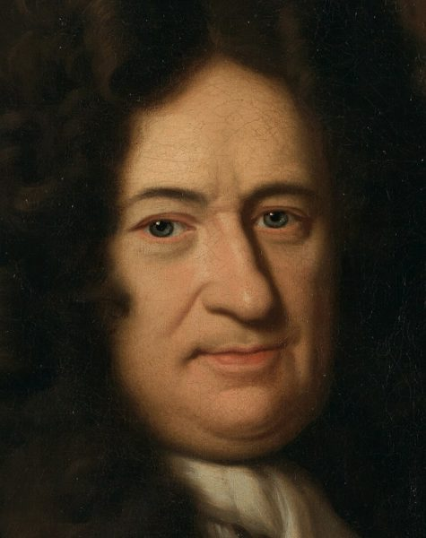
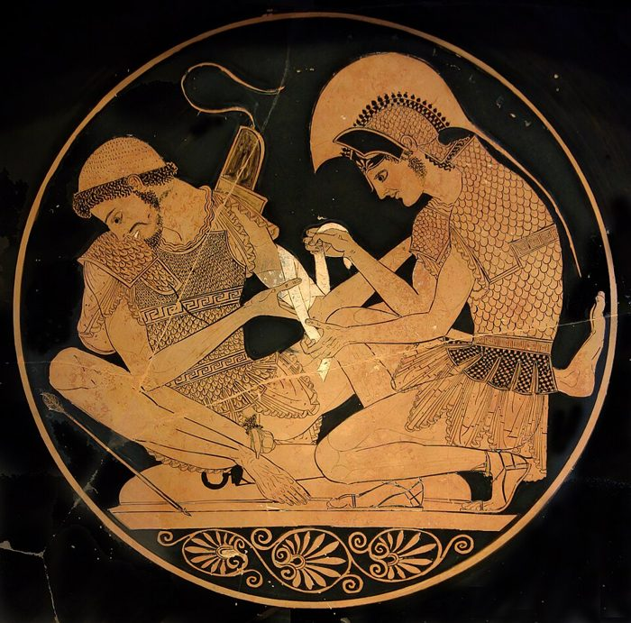

pay for half of it probabilistically
… paid for half of it probabilistically …
（按概率算）这顿饭他付了一半
朋友的玩笑：抛硬币之前两人各有一半的机会付账，从另类历史看，他「付」了一半。正是这一章的道理。
这一章给全书立一把尺子。作者从一个思想实验讲起：一位闲得发慌的大亨出一千万美元，请你玩一次俄罗斯轮盘。赢来的一千万和牙医一颗颗补牙挣的一千万，会计看来一模一样，作者看来不一样。接着他拿这把尺子去量华尔街：MBA 和俄国物理学家、两位脾气相反的上司、一位电视评论员拿「听你的就亏钱」去问经济学家席勒、去机场问旅客买保险的实验、公司里新设的风险经理。读的时候抓一条线：你看到的那一次结果，只是好几种可能里碰巧发生的一种。
第 1 章末尾，作者说按 Nero「可能过的所有人生」平均起来算，他其实很富；可以说，牙医也比开粉色劳斯莱斯的摇滚明星富。他说那种怪算法下一章再讲，就是这一章。这一章是第一部的理论起点：「另类历史」「产生器」两个词后面每章都用。§2 的轮盘到第 3 章会被搬进电脑，做成蒙特卡洛模拟；§7 顺口提到的幸存者偏差是第二部的主题；§6 和 §10 碰到的人怎样误判概率，第 11 章才正式讲。
§10 作者说，察觉和躲避风险主要靠大脑里管情绪的部分，理性思考和躲避风险「几乎没有关系」，还说这是科学事实。他依据的那派研究说的是情绪「常常」左右人对风险的反应，比他说得轻。读的时候把那几句当作者的概括，详细的在页末。
两个人挣到同样多的钱，能不能说他们干得一样好？
读的时候带着这几个问题。不用先找答案，读完回来对照「检查一下理解」。
前四节是一条直线：一个定义，一个思想实验（轮盘），一段很快的学术巡礼（哲学、物理、经济学里同一个想法），再把轮盘换成现实。§3 最像课本，跳过不丢线。§5 起突然转进交易室：谁肯去想看不见的历史，1980 年代的 MBA 怎样成批出局，俄国物理学家怎样涌进华尔街，两位上司怎样处处相反。这三节是作者的见闻和挖苦，读着轻松，主题藏在第二位上司身上。§8 回到正题，从历史学家怎样评名将讲到一次电视访谈，中间插了《伊利亚特》。§9 到 §11 是一串短节：辩论、机场保险的实验、新闻、一句法国格言，从「人天生读不懂概率」一路说到「好懂不等于对」，节和节之间跳得厉害。最后两节落到公司里的风险经理，以作者自己生意的一个悖论收尾，交棒给第 3 章。
这一页就是原书和译本的第 2 章，一共 13 节。粗体是本站给的节名，后面是档和译本字数；下面是译本的小标题和这一节在译本电子书里开头的几个字（搜它就能跳过去），再下面是英文原文的开头。「先读」是这一章的骨架，「有空」好看、跳过不丢线，「可跳过」读不读都行。读完打个勾。
先把这一页用到、作者默认你懂的几个概念讲一遍。讲的是概念本身，作者拿它推出什么，读原书时自己看。别页讲过的概念，点链接过去看。
「另类历史」是作者的用法：一件事本来可能有好几种走法，实际只走了一种，没走成的那几种就是另类历史。最接近的通行说法是「反事实」（counterfactual）：要是当时……，会怎样。
程序员熟悉的例子：一次上线没出事，不等于这次上线做得好，可能只是那条没测到的分支今天恰好没人走。要评价做得好不好，得把「本来可能出的事」也算进来。决策研究里也把「决策的好坏」和「结果的好坏」分开：好的决策可能碰上坏结果，糟的决策也可能碰上好结果。
在这一页：§1 下定义，§2 用轮盘演示，§8 拿它去看历史学家和电视评论员。后面几乎每一章都用这个词。
产生器是作者的叫法，指产生结果的那台「随机机器」：轮盘的六个弹巢，一笔交易背后押的风险，一门生意赚钱的方式。我们看得到的是它吐出来的结果（财富、业绩、一份漂亮的年终奖），看不到机器本身。
打个比方：两个人都从抽奖箱里摸出了一等奖。一个箱子里一半是一等奖，另一个箱子里一万张才有一张。奖品一样，箱子不一样。只看结果的人看到的是奖品；问「箱子里装的是什么」的人，看的是产生器。
在这一页：§2 起反复出现：§4 说现实的产生器肉眼看不见，§7 第二位上司只关心它，§12 风险经理的差事就是盯着它。
期望值是概率论里最基本的平均：把每一种可能的结果乘上它的概率，再加起来。抛一次硬币，正面赢 10 元，反面输 4 元，期望值是 0.5×10 − 0.5×4 = 3 元：玩很多次，平均每次赚 3 元。
换个角度看，它是「所有可能的你」的平均：假如同一件事重来一千遍，把一千个结局平均起来。轮盘那个赌局，赢的概率 5/6，奖金一千万美元，奖金的期望约 833 万；可另外六分之一里你死了，死没法和钱放在一起平均。所以期望值只告诉你平均，不告诉你最坏的那一种有多坏，也不告诉你自己会落在哪一种。
在这一页：§2 的「另类会计」就是这种看法；第 1 章 §11 说 Nero 和牙医「平均起来」很富，也是这个意思。第 6 章拿它算赌局。
哲学里的「副现象论」本来是心灵哲学的一种主张：意识像机器运转时冒出的蒸汽，伴随着大脑的活动出现，本身却不推动任何事。作者用得宽得多：两件事总一起出现，人就以为一件引起了另一件，他都拿这个词来说。
他问的是：罗盘推着船走吗？船转向，罗盘的指针跟着转，可推船的不是罗盘。办公室里也常见：项目顺利的那几周正好天天开站会，不等于是站会让项目顺利。
在这一页：§13 用它问：公司设了风险经理、天天「盯着」风险，风险是真少了，还是只让人觉得一切在控制之中？
这一页还碰到几个别页讲的概念：§4 的黑天鹅和归纳问题，§5 的奇特期权见期权，§7 的幸存者偏差和爆仓，§10 的波动和启发法和偏误，§12 医生的两类错误见条件概率和基础比率。§2 预告的工具是蒙特卡洛模拟。
按在书里出现的顺序排，标题前是节号。只讲到读懂这一页需要的程度。
俄罗斯轮盘是一种拿命赌的「游戏」：左轮手枪的转轮里只装一颗子弹，随手转一下，对着自己的头扣扳机。作者在这一节说了两件私事：十几岁时，他在黎巴嫩战争中有一个同伴死于这种游戏；格林在自述里说小时候为了解闷扣过扳机，作者想到自己「至少有六分之一的机会」读不到格林的小说。黎巴嫩内战从 1975 年打到 1990 年，作者是黎巴嫩人，少年时经历了战争的头几年。

作者这一节在说：另类历史这个想法，好几门学问各自想到过。哲学：Saul Kripke（1940–2022）等逻辑学家用「可能世界」讨论一句话是不是在所有可能的世界里都成立。物理：Hugh Everett（1930–1982）1957 年的工作后来发展成量子力学的「多世界诠释」，每到一个分岔，宇宙就像树一样分枝。经济学：Kenneth Arrow（1921–2017，1972 年诺贝尔经济学奖）和 Gérard Debreu（1921–2004，1983 年获奖）把不确定的未来列成几种「自然状态」，这就是状态空间方法，作者说它是新古典经济学和数理金融的基石；简化版就是企业做预算时的情景分析。
作者 1980 年代进华尔街，那时交易室里多是商学院出身、「讲商业」的人。§5 说的奇特期权（exotic options），是条款比普通期权复杂得多的期权，比如要价格碰到某条线才生效的那种，赚赔方式反直觉。1990 年代起，大量物理、数学出身的人进了华尔街，给这些复杂的衍生品定价、做交易，作者说其中很多来自俄罗斯。§6 的 Aeroflot 是俄罗斯航空，JFK 是纽约的肯尼迪机场，Wharton（沃顿商学院）是作者自己读 MBA 的地方，FASB 是制定美国会计准则的机构，作者拿「讨论 FASB 准则」代表最无聊的午餐话题。
Kenny 和 Jean-Patrice 是作者给两位真实上司起的化名（「我叫他……」），不是他编的人物，真名不可考。Kenny 所在的公司以衍生品出名；1993 年欧洲债券大涨，他手下几位交易员赚得很好，作者毫不掩饰地认为他们只是碰运气。Regine’s 是纽约的一家高级夜总会。作者后来在巴黎读了博士（1998 年完成），§7 说 Jean-Patrice 在他论文答辩时突然出现在会场后排。
席勒从 1996 年起就说美股高估。威尔在一次访谈里对他说：你开始说高估以后，股市又涨了一倍多，听你的人早亏钱了。作者说威尔还为此写过文章，谈席勒的「预言」落空；书里没说是哪一年。前半节的汉尼拔（迦太基名将，进攻罗马失败）、希特勒、亚历山大大帝、恺撒，是作者拿来说「历史学家以成败论战略」的例子。Yogi Berra 是美国棒球明星，以说俏皮话出名。

作者把两个实验并在一句话里归给 Kahneman 和 Tversky。加州地震引起洪水那个确实是他们的：1983 年的论文里，一半学生估计「明年北美某地发大水、淹死上千人」的概率，另一半估计「明年加州地震引发大水、淹死上千人」，后者估得更高，可它只是前者的一种。这道题问的是加拿大的大学生；参加国际预测大会的专业预测者做的是另一道同类的题，也犯了同样的错。机场保险那个，出自 Johnson、Hershey、Meszaros 和 Kunreuther 1993 年的论文：人们愿意为只赔恐怖袭击的航空险多掏钱。疯牛病传到人身上的病叫变异型克雅氏病，据英国的监测机构，截至 2025 年初英国共有 178 人死于这种病。
作者说 1905 年向伦敦《泰晤士报》的记者解释「运动会让时间变慢」，人家会当你疯了。他还说诺贝尔奖委员会从没为狭义相对论给爱因斯坦发奖：爱因斯坦 1921 年的物理学奖，颁奖理由是他对理论物理的贡献，特别是发现了光电效应的定律。
风险经理是公司里专门盯风险的人：看交易员押了多少、出事会亏多少，必要时让他们减仓。作者说这是「最近」才有的奇怪职位，1990 年代几次大亏损以后，大银行纷纷设了独立的风险部门。§13 提到的 Donald Sussman（1946–）是美国对冲基金经理、Paloma 基金的创办人；作者说他在自己职业的第二阶段帮了忙，让他不再受雇于人。
读英文原文时值得停一下的词和句：交易员的行话、作者的反话和双关、熟词生义。灰色斜体是原句里连续的几个词，在英文电子书里搜它就能找到；标「每个字都认识」的，是每个词都眼熟、合起来意思却变了的，最容易读错。点「记下」收进词本。
对着译本读这一章时，下面这些地方会把人读歪。方框里是译本的原句，在译本电子书里搜它就能找到；灰色斜体是英文原文那一处。只收意思错了、反了、漏了的，措辞上的出入和台湾用语不收。全书的勘误汇总在译本勘误。
… that probability is a qualitative subject …
译本：「我們將談到機率是個計性課題」
qualitative 是「定性的」，和「定量」相对。作者的意思是：另类历史不必真的算出来，要看它们是什么性质，数学只拿来帮直觉。「計性」读着像「计量」，正好拧了，这几句的道理也跟着变了。
… ingratitude factor in warning people about …
译本：「警告人們不要碰抽象的東西」
原文说：提醒人们防范一件抽象的风险（没发生的事都是抽象的），是得不到感谢的。后面他替投资人做防范稀有事件的产品、被抱怨白花钱的例子，讲的就是这个。译本读来像作者在劝人「别碰抽象的东西」，和下文接不上。
… Particularly thoughtful are those who had …
译本：「在有自知之明的情況下，不得不放棄科學研究」
原文：特别爱思考的，是那些因为没法专注在一个狭窄问题上、不得不放弃科学研究的人（Nero 是受不了琐碎的细节）。这句是夸奖。译本把「特别爱思考」换成「有自知之明」，读来像这些人自知不行才退出。
… Some successful scientists had the judgment …
译本：「有些成功的科學家懂得怎麼轉開球形門把」
原文说有些成功的科学家「判断力（和社交能力）跟门把手一样」，就是一点没有；后半句是「但绝不是所有人都这样」。译本说成他们「懂得怎么转开门把」，像在夸他们有点本事，意思正好反了。
… taught me to beware of mature financial …
译本：「要懂得明哲保身」
原文的教训是对机构本身起戒心：会往上爬的 Kenny 升到高层，懂风险的 Jean-Patrice 却不顺，作者由此学会提防成熟的大金融机构。译本说成在这种机构里做事「要懂得明哲保身」，变成了教人怎样自保。
… as Rome is not today Phoenician-speaking …
译本：「然而羅馬今天不講腓尼基語」
原文的 as 是「因为」：我们说汉尼拔和希特勒疯狂，是因为罗马今天不讲腓尼基语、时报广场上没有纳粹标志，也就是因为他们输了。作者批评的正是这种以成败论战略的推理。译成「然而」，因果断了，讽刺也读不出来。
… prophecy belongs to the right column …
译本：「預言屬於下欄」
表 P.1 分左右两栏：左栏的东西常被误认成右栏的，「预测」在左，「预言」在右。译本的表也是左右两栏，「预言」在表里作「先知」；这里却说「下栏」「上栏」，叫法也换了，对照着找表会找不到。
… anecdotal evidence in my business that …
译本：「企管碩士經常在金融市場陣亡的原因」
原文作者先给自己加了限定：他在这一行有些「个人见闻式的证据」，说明 MBA 往往（tend to）在金融市场爆仓。译本丢了这层限定，「往往」又成了「经常」，读来像作者在陈述一条确定的规律。
… for insurance that pays the same …
译本：「保費相同的保單」
实验问的是：同样赔一百万图格里克，一种保单任何原因死亡都赔，另一种只赔恐怖袭击，旅客各愿意付多少保费。译本把「赔付相同」译成「保费相同」，保费都定了，「愿意付多少」就问不下去，整个实验讲不通。
… that he is a dangerous idiot …
译本：「說服他相信自己是冒很大危險的白癡」
从上下文看，him 是 Kenny，he 是 Kenny 手下业绩「证明」很出色的明星交易员：作者有足够的理由说服 Kenny，那位交易员是个危险的白痴。译本写成「相信自己」，读来像要说服 Kenny 承认他自己是白痴。
读完这一章再看。下面是作者在这一章里的主张，由本站按主张之间的逻辑重新组织，不按原书的顺序；每条后面是节号，拿不准就回书里那一节再读一遍。
他说这是老生常谈，难的是做到：实际发生的只有一种，看得见；没发生的几种看不见。他挖苦说，这话似乎只有失败者在讲。轮盘的一千万和牙医的一千万能买一样的东西，依赖运气的程度却不同，他说自己「忍不住」认为两者性质不同。
§1 §2一年玩一次，二十五岁的人很难活到五十岁；玩的人够多，会剩下一小撮巨富和一大片墓地。现实里子弹少见，几十次没事人就忘了它；弹巢看不见，人可能不知不觉地玩着轮盘，还管它叫「低风险」；替人防住了没发生的事，多半没人感谢。
§2 §4依据是他在华尔街多年看人：受过一点科学训练的人往往（tend to）更会想看不见的历史，但他提醒未必是训练本身的功劳；1980 年代的 MBA 交易员成批出局；两位上司里，只关心产生器、不看结果的那位更懂风险。他说这不是巧合。
§5 §7历史学家以成败论名将，威尔拿「听你的就亏钱」问席勒，都是不考虑另类历史。他说不理性的市场完全可能更不理性，一次说错推翻不了席勒的看法。他还借心理学说，人判断风险靠情绪和鲜活的画面，新闻专挑刺激情绪的讲，新闻也许（may）是今天最大的祸害。
§8 §10他说听起来聪明的话值得怀疑，反直觉的道理压不进一句电视台要的话。他断言机构设风险经理，与其说为了降低风险，不如说为了降低风险的「印象」。他自己的生意则要大多数人继续被随机愚弄，又要有少数人不被。
§11 §13合起来：结果只是许多可能里碰巧发生的一种。评价一个人、一个决策、一笔钱，要问它背后的产生器，问「本来可能怎样」。这是作者给全书立的尺子，后面的蒙特卡洛、幸存者偏差、偏态都拿它来量。
$10 million earned through Russian roulette does not have the same value as $10 million earned through the diligent and artful practice of dentistry.— §2。本站译：靠俄罗斯轮盘挣来的一千万美元，和靠勤勉而高明地行医补牙挣来的一千万美元，价值不一样。
这是全章的命题，口气像在讲一条会计规则，其实是在反会计：账面上这两笔钱一分不差。关键是 value：作者不是说两笔钱能买的东西不同（他紧接着承认能买一样的东西），而是说它们背后的产生器不同。diligent and artful 像是特意给牙医的一点体面，平淡的职业在这里成了正面角色。容易误读成「靠运气的钱不道德」；他讲的是风险，不是道德。
What sounds intelligent in a conversation or a meeting, or, particularly, in the media, is suspicious.— §11。本站译：在谈话里、会议上，尤其是在媒体上，听起来很聪明的话，都值得怀疑。
原文整句是斜体，作者的口气是下判断，带着对电视评论员的不耐烦。关键词是 suspicious：可疑，不是错。他没说复杂的话才可信，只说「顺耳」本身不能当证据。译本：「說穿了其實不無可議之處」意思到了，口气比原文绕了一圈，弱了不少。
这本书 2004 年出第二版，书里讲的多是 1980–2003 年的事。下面挑出这一页里能被后来的研究或事情检验的说法，分「书里 / 当时 / 今天」几栏，并给一个结论。结论判的是标题里「书里的说法：」后面那一句。全书的这一节汇总在今天怎么看。
读完作者的主张，再看它站不站得住。每一块摆出三样：主流怎么看，作者怎么看，本站的评论。最后一句是本站对这一页的总体判断。
主流看法：决策研究同意要把决策和结果分开评价，「结果偏差」1988 年就有人测出来，2023 年重做仍然成立。难处在于现实里的另类历史算不出来：没有人知道现实那把枪有几个弹巢，评估只能靠判断。
作者的看法：不必真的算出另类历史，要评估它们的性质；连最会算概率的科学家也给不出现实的赔率，因为看不见现实的弹巢。§2 §4
本站的评论：这把尺子好用，也有一个危险：它能替任何失败开脱。「决策没错，只是运气不好」，正是 §1 里作者挖苦的卸任政客的话。用另类历史，最好事先说清「什么样的结果会说明我错了」，不然它就成了驳不倒的托词。作者替席勒辩护时也碰到这一点：「高估」要是多久都不必兑现，就很难被证明是错的。
主流看法：Loewenstein、Weber、Hsee 和 Welch 2001 年在《心理学公报》上提出「风险即感受」：人面对风险时的情绪反应常常和理性的评估不一致，不一致时，情绪常常主导行为。这是一个理论框架，用来补充只讲计算的决策理论，没有说理性评估不起作用。
作者的看法：察觉和躲避风险主要由情绪脑负责是科学事实，理性思考和躲避风险几乎没有关系，多半只是事后找理由；新闻也许是今天最大的祸害。§10
本站的评论：方向对，话说满了。研究说的是「常常」，他说成「几乎没有关系」。而且这一章的劝告本身，就是要人用理性去想看不见的东西；理性要真和躲避风险无关，劝也就白劝了。机场保险是好例子，人确实爱为鲜活的风险掏钱；他配上的「911 之后波动小得多」却只对纳斯达克成立。
主流看法：2008 年 3 月，几个国家的银行监管机构组成的「高级监管者小组」检查了十一家大银行和券商在次贷风暴里的表现：亏得少的那几家，管理层更积极地管住全公司的资产负债表和流动性，风险计量会随情况调整，能从全公司的角度看风险，也更多用压力测试和情景分析。
作者的看法：风险经理拦不住赚钱的交易员，出了事又要负责，只好写措辞含糊的备忘录自保；机构设这个职位，与其说为降低风险，不如说为降低风险的印象。§12 §13
本站的评论：他把这个职位的两难讲得很准：拦对了，没人看得见，这正是另类历史的难处。但「只是印象」说得太绝：2008 年的检查显示，风险管理做得好坏，亏损大小真有差别。关键不在有没有风险经理，在他们有没有权力，这一点作者在 §12 自己也提到了。
本站的总体看法：这一章最值得带走的是前四节：结果只是许多可能里的一种，评价要看产生器。这个道理后来在心理学里有了名字，也经得起重做。交易室的人物素描好看，但那是作者的见闻和好恶；心理学和新闻几节话说得比研究满，风险经理一节说得太绝，都要打个折扣。
先在心里答，再点开。答错的那题，回书里把对应那一节再读一遍。
要连着活 25 次，(5/6)²⁵ 约等于 1%，所以作者说「机会微乎其微」。一千个人里大约剩 10 个，个个极富，其余的进了墓地。
会计和邻居看来一模一样，钱能买的东西也一样。作者看产生器：前者依赖运气多得多，换一种走法就是一份讣告，所以他忍不住认为两者性质不同。
每次中弹的概率小了，可连着几十次没事，人就忘了里面有子弹，越玩越放心；而且现实的弹巢看不见，连有几个都不知道。按本站的算法，一千个弹巢玩 250 次，大约五个人里就有一个出事。
按另类历史看不是：那一年工厂本来可能着火，在那几种历史里保险替你赔了。书里抱怨「白花钱」的投资人，只看了实际发生的那一种。
Jean-Patrice 只关心产生器、不看结果，脑子里一直设想可能出的每一件事，连飞机撞进办公楼都要作者做预案。Kenny 稳重体面，只看手下交易员赚了多少，作者跟他讲幸存者偏差也讲不通。
任何原因已经包括了恐怖袭击，赔的范围只大不小。人肯为后者多付，是因为恐怖袭击具体、有画面，「任何原因」太抽象；作者说他做衍生品交易时也看到人不爱为抽象的东西投保。
拦了没出事，事后会被威尔那样的人指责害股东错过了赚钱的机会；没拦而出事，责任算在他头上。所以作者说他们写措辞含糊的备忘录保护自己，像医生在假阳性和假阴性之间拿捏。
用一句话说这一页：
想一想：你的工作里有没有一件「做对了但没人知道」的事，比如提前修掉一个隐患、拦下一次危险的上线？当时别人怎么评价它？反过来，你有没有因为一次结果好，就高看了某个决定？
读过又忘了，从这里想起来。挑的是这一页最值得记住的故事和说法，不按原书顺序；每条后面是节号，想细看就回书里那一节。全书各页的这一节都收在全书回顾。
一句话：你看到的结果只是许多可能里碰巧发生的一种：同样一千万，来路不同，分量不同。
无聊的大亨出一千万美元请你玩一次俄罗斯轮盘。赢的人会被记者夸、被邻居当榜样；没人看见另一种历史里的那份讣告。
§2钱一样多，能买的东西也一样，一笔靠运气，一笔靠一颗颗补牙。会计看不出差别，作者说他忍不住认为两者性质不同。
§2作者和一位交易员朋友抛硬币决定谁请客，作者输了。朋友正要道谢，忽然改口：按概率算，这顿饭他付了一半。
§5第二位上司从夜总会打电话吵醒作者，讨论他仓位上的小细节；还逼他为飞机撞进办公楼做预案，那是 2001 年 9 月之前很久的事。
§7电视评论员威尔对席勒说，要是大家早听他的，早就亏钱了。作者说，不理性的市场还可以更不理性，一次说错推翻不了一个人的判断。
§8公司设了风险经理，天天盯着风险。作者问：风险是真的降低了，还是只给人一种一切在控制之中的感觉？
§13